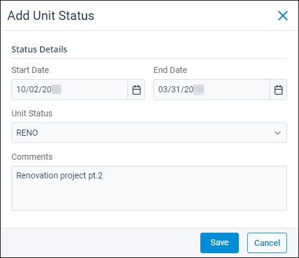

Source: https://rmxhelp.rentmanager.com/Topics/Express/KB/Units-Status-Add-Assign.htm
Add and Assign a Unit Status
Unit statuses are exceptions to the standard statuses of occupied or vacant. These statuses plays a key role in determining whether Rent Manager lets tenants move into the unit or allows prospects to reserve the unit. It also determines whether the unit counts as vacant for certain reports. For example, creating and assigning statuses is useful if you have units that are unavailable to rent because they are under renovation and should not display on vacancy reports. In a situation like this, you could create a unit status type for RENO (renovation) and assign that status to the applicable unit(s).
Related Privileges
| Group | Privilege | Column |
|---|---|---|
| Properties/Units | Unit status types | Add, View |
| Unit statuses | Add | |
| Units | View, Edit |
For more information, refer to Control User Access.
Step 1: Create a Unit Status
-
Go to
 arrow_forward Rental Info arrow_forward
arrow_forward Rental Info arrow_forward  Rental Info Setup arrow_forward Properties/Units arrow_forward Unit Status Types.
Rental Info Setup arrow_forward Properties/Units arrow_forward Unit Status Types.
The Unit Status Types page displays. -
Click
 Add Unit Status Type.
Add Unit Status Type.
The Unit Status Type Add pop-up displays. -
Enter a short Name to describe the unit status type. For example, RENO can be used for renovations.
-
Enter the full name in the Description field for this unit status type. For example, Renovations can be used for a status with the Name of RENO.
-
Depending on how you want the unit with this status to display, check Show As Vacant or Show As Available:
Option Description Show As Vacant
Rental units display as unoccupied for reporting purposes.
Show As Available
When a unit is occupied but the tenant has given notice that they are moving out, this status can be applied so that the unit can be marketed and displays in relevant reports. Rental units can be reserved by prospects and leased by tenants once the unit status has ended or is removed.
-
Click Save.
The new unit status type is added to the Unit Status Types page.
Step 2: Assign the Status to a Unit
To assign the new status, follow the steps below:
-
Go to
arrow_forward Rental Info arrow_forward General arrow_forward Units and select a unit from the list.
The Unit details page displays. -
On the Unit Status tile, click
 .
.
The View Unit Status pop-up displays. -
Click
Add Unit Status.
-
Enter or select the Start Date for when the status takes effect.
-
If applicable, enter the End Date for when the status expires.
-
From the Unit Status drop-down field, select the unit status. Choose a user-create status or one of the following system status:
Status Description INACT
Assign to units that should not display as vacant or available. For example, you can use this status to identify units you still want to keep track of for reporting purposes, but do not want to make rentable again.
Make Ready
Assign to units that should display as vacant but not available because they are being prepared for new occupancy. For example, this status can be assigned to units currently in the make ready process and are not yet available to be marketed for rent.
Unrenteable/Undeveloped
Assign to units that should display as vacant but not available because they are not in livable condition. For example, this status can be applied to units that you have not finished building.
-
Enter any Comments about why the unit status was placed or information about when it can be removed.
-
Click Save.
The unit status is added.